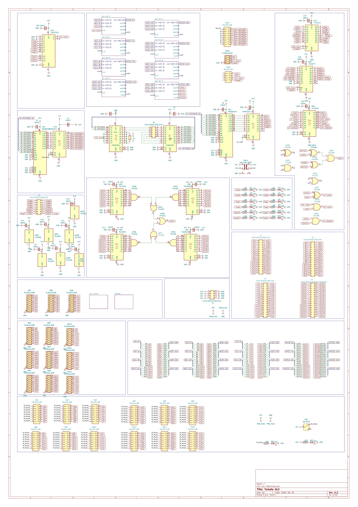

Dispatch · Decision
Falling back to 32-bit
Forty bits was intellectually clean. Building is the constraint, not the spreadsheet. The swing was useful. The answer is the machine we already know how to wire.
In a swing between implementations, the design falls back to 32-bit. The 40-bit redesign was clean — one word type, a fourth operand field, room for a larger instruction table. A day went into catalogs and widening math. Then the constraint reasserted itself.
Why not 40
Forty bits is weird, perhaps as weird a number as Tomato has always been. That narrative needs no regularly accompanying weirdness. Widening every field would open something like eight thousand GPR if you rebuilt every board. Treat that as a possibility, not a discipline. Tomato was already unconventional. Stacking an unconventional word on an unconventional ALU doubles the explanation without doubling the silicon on the bench.
What stays
Opcode space limited to 512 rows — a 9-bit ROM index. Four 5-bit operand fields plus a 3-bit bank: 32 GPR times 8 banks is 256 addressable registers. Tiny against eight thousand. Still real memory in conventional terms — banks you can name, spill to, and wire without a full datapath rebuild.
Dark silicon persists. The ALU still knows more functions than the instruction ROM exposes. That was always the plan. No fourth read port. No 40-bit RAM on bring-up. The ALU PCB stays as built.
| Area | 40b, set aside | 32b, current |
|---|---|---|
| Word | 40 bits, unified | 32 bits |
| Opcode ROM | 4096-row table | 512 rows |
| Register file | 4 read ports, 6-bit addr | 3R1W, 32 × 8 |
| Digital | alu-40b-final | alu-32b-final, main.dig |
Ship 32-bit Tomato. Run Digital on main. Keep verification on the 32b ALU export. Put fab time toward peripherals and control boards — not another word-width pivot.

Fig. — 32-bit sheetThe word we already know how to wire